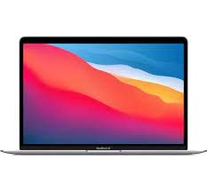

自分の好きなもの
おはこんばんちわ〜nebanebakunです〜今日は僕の好きなものについて紹介したいと思います！
自分の好きな”PC”
僕の好きなPCはMacです。Windowsよりもセキュリティーが高いし、めっちゃ薄いPCなのにめっちゃ早いからですかね。
最近はChromeBookがMacよりも使用する人が多くなってきたし、高いので持ってる人は少ないですね。
ちなみに僕のPCもMacBookAirのスペースグレイの上位グレードです。Macを恋人のように思ってますwww

自分の好きな”お菓子”
僕の好きなお菓子はアイスクリームです。その中でも爽が好きです！他のアイスよりも爽快感が違うんですよ！
だから”爽”っていうアイスなんですかね？爽の好きな味は普通にバニラです！みなさんも食べてみてください！

自分の好きな”ゲーム”
好きなゲームは、Scratchのゲームでbattleboundというゲームですね！
このゲームはKIKOKO_さんがScratchで作った銃撃戦ゲームです。多彩なアクション、マップの広さ、
オンラインプレイヤーの多さの三つがあったのでハマりました！みなさんも是非やってみてください！